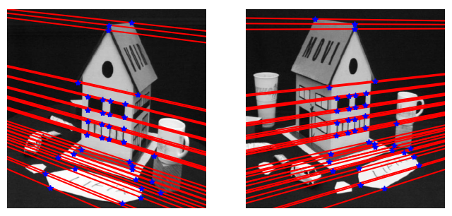
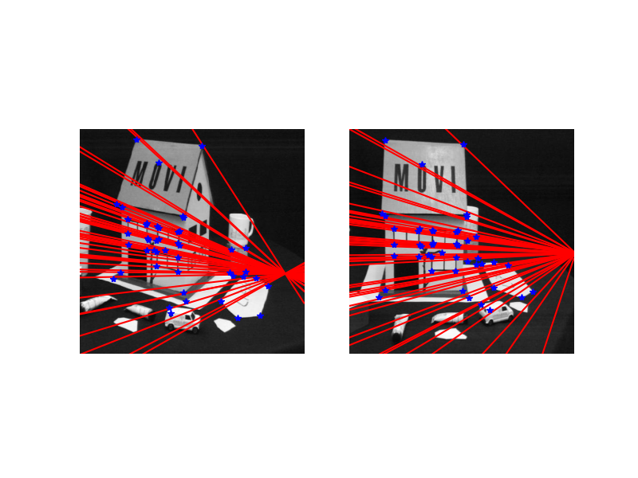
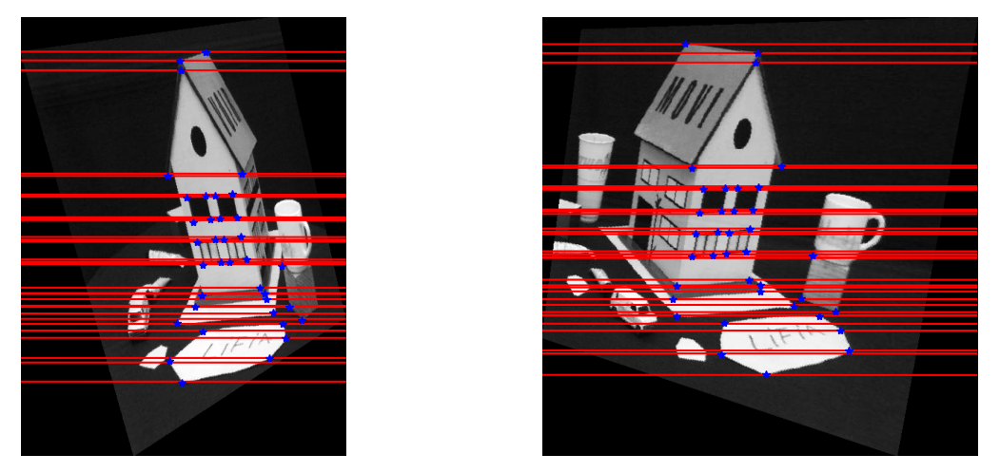
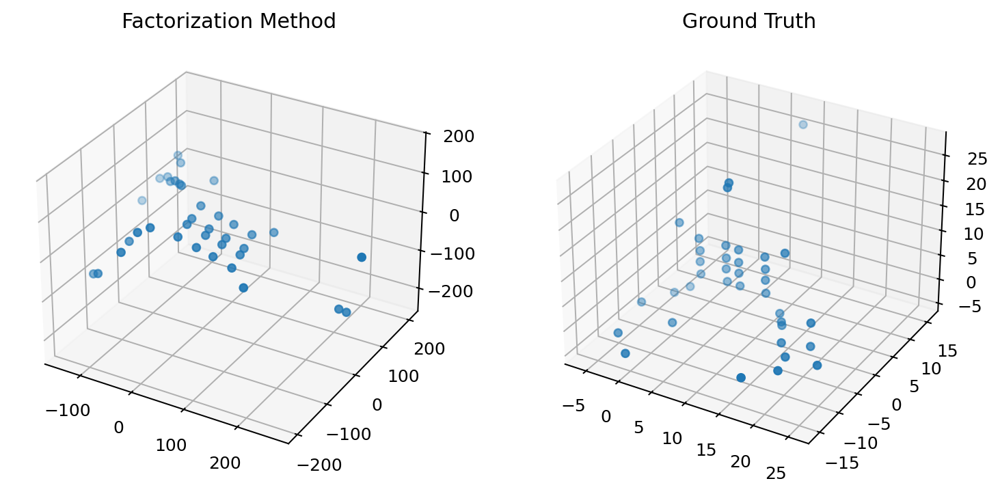
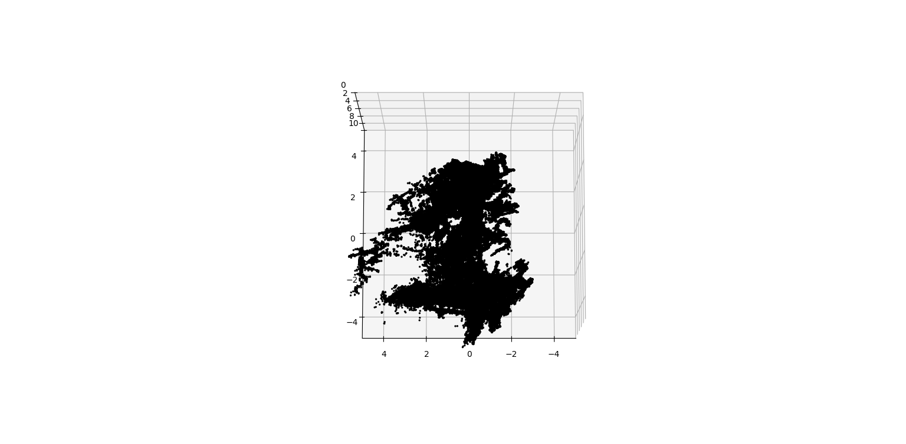

Assignment 4 · Multi-view geometry
From image matches to 3D structure
Four steps connect corresponding image points to camera geometry: estimate the fundamental matrix, rectify a stereo pair, factor an affine measurement matrix, and triangulate a multi-view statue reconstruction.
Part 1 · Fundamental matrix
Correspondences constrain epipolar lines
For matched homogeneous points, the fundamental matrix satisfies p2TFp1 = 0. I formed the eight-point design matrix, solved its least-squares nullspace with SVD, and set the smallest singular value of F to zero. The normalized version first translates each point set to its centroid and scales its mean distance to √2, then denormalizes the estimated matrix.
| Data set | Method | Image 1 mean distance | Image 2 mean distance | Maximum |p2TFp1| |
|---|---|---|---|---|
| set1 | LLS | 28.03 px | 25.16 px | 0.6635 |
| set1 | Normalized | 0.89 px | 0.83 px | 0.2066 |
| set2 | LLS | 9.70 px | 14.57 px | 0.2054 |
| set2 | Normalized | 0.89 px | 0.89 px | 2.9200 |
For each match, I compute the corresponding epipolar line (for image 1, FTp2) and average its perpendicular distance to the image point in pixels:
Normalization greatly improves the estimates on both sets. The algebraic residual is scale-dependent and is not a pixel error.
Fundamental matrices (full precision)
set1 · LLS
set1 · normalized
set2 · LLS
set2 · normalized






Part 2 · Image rectification
Make corresponding epipolar lines horizontal
The epipoles are the null vectors satisfying FTe1 = 0 and Fe2 = 0. To construct the second image homography, I translate the image center to the origin, rotate the epipole onto the horizontal axis using the sign factor α, and apply a projective transform that sends it to infinity. For the matching homography, I use the course-note form:
I solve a least-squares problem over the point correspondences for the parameters of HA, then form:
For set1, the epipoles are approximately e1 = (−1300.79, −142.66, 1) and e2 = (1654.22, 45.43, 1). The transformed fundamental matrix has the expected horizontal-epipolar form, as shown in the rectified pair below.

Part 3 · Factorization
Recover affine shape and camera motion
I center the four-row measurement matrix and retain its leading three singular components to obtain a rank-three motion/structure factorization. For the metric upgrade, I solve the six linear constraints from the two views for the six independent entries of the symmetric matrix A = QQT. When the equations leave a one-dimensional nullspace, I choose the positive-definite solution with the lowest condition number, without using the ground truth. I factor the metric with Cholesky when it is positive definite; if no positive-definite nullspace solution is available, I floor its eigenvalues at 1% of the largest eigenvalue. The motion and structure are then upgraded with Q and Q−1.
For the full set, the factorized point cloud captures the broad 3D arrangement of the ground truth. The two clouds are not plotted in a shared coordinate frame, so their orientation and scale need not match directly; the factorization is inherently ambiguous up to a global similarity transform. Any remaining differences after accounting for that transform come from measurement noise and the approximate metric upgrade.
The TA note distinguishes the minimum point geometry from practical stability: four non-coplanar
points are needed for a centered point cloud to span 3D, while additional well-distributed points and
camera views improve robustness. Our two-view subset has 18 points, but its ground-truth points are
nearly planar: the singular values of its centered 3D coordinates are approximately
17.28, 14.18, 0.38. Its small depth spread makes the recovered depth especially
sensitive to noise, which explains why its shape does not align as well by eye as the full set.
This is not just a global rotation or scale difference.
There are six metric equations from two views, but for these measurements the six-by-six constraint matrix has numerical rank five. Thus the metric upgrade is not uniquely determined. The implementation selects a positive-definite candidate with a low condition number along the remaining null direction; if it cannot find one, it floors small eigenvalues as a numerical fallback. This selection is a practical heuristic, not information supplied by the two images.
| Correspondence set | Centered measurement-matrix singular values |
|---|---|
| set1 (37 points) | 959.5852, 540.4761, 184.4317, 27.9152 |
| set1 subset (18 points) | 264.5440, 210.0607, 7.2192, 5.1286 |
The centered measurement matrix has four rows, so measured data can have four nonzero singular values. Under the ideal affine orthographic model it factors through a three-dimensional structure, giving rank at most three; the fourth singular value would be zero. In practice it is nonzero because of measurement noise and departures from ideal orthographic projection. For the subset, the third and fourth values are both small relative to the first two and close to each other (σ4/σ3 = 0.71, versus 0.15 for the full set), so the rank-three approximation is less clearly separated from the discarded component.



Part 4 · Structure from motion
Choose camera pose, triangulate, refine
The essential matrix gives four candidate rotation/translation pairs. I triangulate each match under each candidate and select the pose with the most points at positive depth in both camera frames. A linear DLT estimate initializes Gauss–Newton refinement of the reprojection error.
| Check | Result |
|---|---|
| Linear 3D point difference from expected point | 0.00292 (sum of absolute coordinate differences) |
| Reprojection-error implementation difference | 8.30 × 10-7 |
| Jacobian implementation difference | 1.82 × 10-8 |
| Unit-test reprojection error, linear estimate | 98.74 |
| Unit-test reprojection error, nonlinear estimate | 95.59 |

A larger scene such as a house is harder because it needs more overlapping views and reliable tracks across a wider range of viewpoints. Occlusion, repeated textures, viewpoint and scale changes, and accumulated camera-pose error can all produce mismatches or drift. More cameras and points also make triangulation and bundle adjustment more computationally demanding.
Takeaway
Geometry links local matches to global shape
Epipolar constraints reduce correspondence search to a line; rectification makes that line horizontal. Factorization recovers an affine approximation from multiple views, while calibrated projective cameras and triangulation recover a more complete 3D structure. Each step depends on the quality and consistency of the image correspondences.
References & implementation
- SYDE 671 Assignment 4, adapted from Stanford CS231A.
- Course teaching assistant, handwritten note on affine structure-from-motion ambiguity and factorization constraints, provided with the assignment.
- Tomasi and Kanade, “Shape and Motion from Image Streams under Orthography: a Factorization Method.”
- Hartley and Zisserman, Multiple View Geometry in Computer Vision.